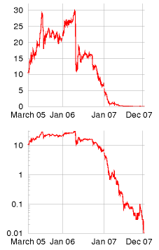
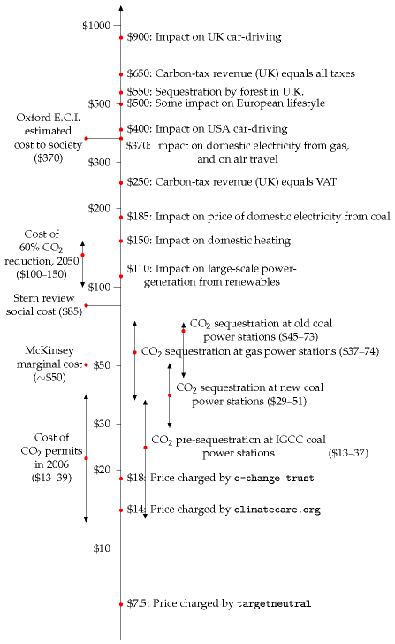

29 What to do now
Unless we act now, not some time distant but now, these consequences, disastrous as they are, will be irreversible. So there is nothing more serious, more urgent or more demanding of leadership.
Tony Blair, 30 October 2006
a bit impractical actually… 1
Tony Blair, two months later, responding to the suggestion that he should show leadership by not flying to Barbados for holidays.
What we should do depends in part on our motivation. Recall that in chapter 1 we discussed three motivations for getting off fossil fuels: the end of cheap fossil fuels; security of supply; and climate change. Let’s assume first that we have the climate-change motivation – that we want to reduce carbon emissions radically. (Anyone who doesn’t believe in climate change can skip this section and rejoin the rest of us next section.
What to do about carbon pollution
We are not on track to a zero-carbon future. Long-term investment is not happening. Carbon sequestration companies are not thriving, even though the advice from climate experts and economic experts alike is that sucking carbon dioxide from thin air will very probably be necessary to avoid dangerous climate change. Carbon is not even being captured at any coal power stations (except for one tiny prototype in Germany).
Why not?
The principal problem is that carbon pollution is not priced correctly. And there is no confidence that it’s going to be priced correctly in the future. When I say “correctly,” I mean that the price of emitting carbon dioxide should be big enough such that every running coal power station has carbon capture technology fitted to it.
Solving climate change is a complex topic, but in a single crude brushstroke, here is the solution: the price of carbon dioxide must be such that people stop burning coal without capture. Most of the solution is captured in this one brush-stroke because, in the long term, coal is the big fossil fuel. (Trying to reduce emissions from oil and gas is of secondary importance because supplies of both oil and gas are expected to decline over the next 50 years.)

Figure 29.1. A fat lot of good that did! The price, in euro, of one ton of CO2 under the first period of the European emissions trading scheme. Source: www.eex.com.
So what do politicians need to do? They need to ensure that all coal power stations have carbon capture fitted. The first step towards this goal is for government to finance a large-scale demonstration project to sort out the technology for carbon capture and storage; second, politicians need to change the long-term regulations for power stations so that the perfected technology is adopted everywhere. My simple-minded suggestion for this second step is to pass a law that says that – from some date – all coal power stations must use carbon capture. However, most democratic politicians seem to think that the way to close a stable door is to create a market in permits-to-leave-doors-open. So, if we conform to the dogma that climate change should be solved through markets, what’s the market-based way to ensure we achieve our simple goal – all coal power stations to have carbon capture? Well, we can faff around with carbon trading – trading of permits to emit carbon and of certificates of carbon-capture, with onetonne carbon-capture certificates being convertible into one-tonne carbonemission permits. But coal station owners will invest in carbon capture and storage only if they are convinced that the price of carbon is going to be high enough for long enough that carbon-capturing facilities will pay for themselves. Experts say that a long-term guaranteed carbon price of something like $100 per ton of CO2 will do the trick.
So politicians need to agree long-term reductions in CO2 emissions that are sufficiently strong that investors have confidence that the price of carbon will rise permanently to at least $100 per ton of CO2. Alternatively they could issue carbon pollution permits in an auction with a fixed minimum price. Another way would be for governments to underwrite investment in carbon capture by guaranteeing that they will redeem captured-carbon certificates for $100 per ton of CO2, whatever happens to the market in carbon-emission permits.
I still wonder whether it would be wisest to close the stable door directly, rather than fiddling with an international market that is merely intended to encourage stable door-closing.
Britain’s energy policy just doesn’t stack up. It won’t deliver security. It won’t deliver on our commitments on climate change. It falls short of what the world’s poorest countries need.
Lord Patten of Barnes, Chair of Oxford University task force on energy and climate change, 4 June 2007.
What to do about energy supply
Let’s now expand our set of motivations, and assume that we want to get off fossil fuels in order to ensure security of energy supply.
What should we do to bring about the development of non-fossil energy supply, and of efficiency measures? One attitude is “Just let the market handle it. As fossil fuels become expensive, renewables and nuclear power will become relatively cheaper, and the rational consumer will prefer efficient technologies.” I find it odd that people have such faith in markets, given how regularly markets give us things like booms and busts, credit crunches, and collapses of banks. Markets may be a good way of making some short-term decisions – about investments that will pay off within ten years or so – but can we expect markets to do a good job of making decisions about energy, decisions whose impacts last many decades or centuries?

Figure 29.2. What price would CO2 need to have in order to drive society to make significant changes in CO2 pollution? The diagram shows carbon dioxide costs (per tonne) at which particular investments will become economical, or particular behaviours will be significantly impacted, assuming that a major behavioural impact on activities like flying and driving results if the carbon cost doubles the cost of the activity. As the cost rises through $20–70 per tonne, CO2 would become sufficiently costly that it would be economical to add carbon sequestration to new and old power stations. A price of $110 per tonne would transform large-scale renewable electricity-generation projects that currently cost 3p per kWh more than gas from pipedreams into financially viable ventures. For example, the proposed Severn barrage would produce tidal power with a cost of 6p per kWh, which is 3.3p above a typical selling price of 2.7p per kWh; if each 1000 kWh from the barrage avoided one ton of CO2 pollution at a value of £60 per ton, the Severn barrage would more than pay for itself. At $150 per tonne, domestic users of gas would notice the cost of carbon in their heating bills. A price of $250 per tonne would increase the effective cost of a barrel of oil by $100. At $370, carbon pollution would cost enough to significantly reduce people’s inclination to fly. At $500 per tonne, average Europeans who didn’t change their lifestyle might spend 12% of income on the carbon costs of driving, flying, and heating their homes with gas. And at $900 per tonne, the carbon cost of driving would be noticeable.
If the free market is allowed to build houses, we end up with houses that are poorly insulated. Modern houses are only more energy-efficient thanks to legislation.
The free market isn’t responsible for building roads, railways, dedicated bus lanes, car parks, or cycle paths. But road-building and the provision of car parks and cycle paths have a significant impact on people’s transport choices. Similarly, planning laws, which determine where homes and workplaces may be created and how densely houses may be packed into land have an overwhelming influence on people’s future travelling behaviour. If a new town is created that has no rail station, it is unlikely that the residents of that town will make long-distance journeys by rail. If housing and workplaces are more than a few miles apart, many people will feel that they have no choice but to drive to work.
One of the biggest energy-sinks is the manufacture of stuff; in a free market, many manufacturers supply us with stuff that has planned obsolescence, stuff that has to be thrown away and replaced, so as to make more business for the manufacturers.
So, while markets may play a role, it’s silly to say “let the market handle it all.” Surely we need to talk about legislation, regulations, and taxes.
Greening the tax system
We need to profoundly revise all of our taxes and charges. The aim is to tax pollution – notably fossil fuels – more, and tax work less.
Nicolas Sarkozy, President of France
At present it’s much cheaper to buy a new microwave, DVD player, or vacuum cleaner than to get a malfunctioning one fixed. That’s crazy.
This craziness is partly caused by our tax system, which taxes the labour of the microwave-repair man, and surrounds his business with time-consuming paperwork. He’s doing a good thing, repairing my microwave! – yet the tax system makes it difficult for him to do business.
The idea of “greening the tax system” is to move taxes from “goods” like labour, to “bads” like environmental damage. Advocates of environmental tax reform suggest balancing tax cuts on “goods” by equivalent tax increases on “bads,” so that the tax reforms are revenue-neutral. 2
Carbon tax
The most important tax to increase, if we want to promote fossil-fuel-free technologies, is a tax on carbon. The price of carbon needs to be high enough to promote investment in alternatives to fossil fuels, and investment in efficiency measures. Notice this is exactly the same policy as was suggested in the previous section. So, whether our motivation is fixing climate change, or ensuring security of supply, the policy outcome is the same: we need a carbon price that is stable and high. Figure 29.2 indicates very roughly the various carbon prices that are required to bring about various behaviour changes and investments; and the much lower prices charged by organizations that claim to “offset” greenhouse-gas emissions. How best to arrange a high carbon price? Is the European emissions trading scheme (figure 29.1) the way to go? This question lies in the domain of economists and international policy experts. The view of Cambridge economists Michael Grubb and David Newbery is that the European emissions trading scheme is not up to the job – “current instruments will not deliver an adequate investment response.”
The Economist recommends a carbon tax as the primary mechanism for government support of clean energy sources. 3 The Conservative Party’s Quality of Life Policy Group also recommends increasing environmental taxes and reducing other taxes – “a shift from pay as you earn to pay as you burn.” 4 The Royal Commission on Environmental Pollution also says that the UK should introduce a carbon tax. “It should apply upstream and cover all sectors.”
So, there’s clear support for a big carbon tax, accompanied by reductions in employment taxes, corporation taxes, and value-added taxes. But taxes and markets alone are not going to bring about all the actions needed. The tax-and-market approach fails if consumers sometimes choose irrationally, if consumers value short-term cash more highly than long-term savings, or if the person choosing what to buy doesn’t pay all the costs associated with their choice.
Indeed many brands are “reassuringly expensive.” Consumer choice is not determined solely by price signals. Many consumers care more about image and perception, and some deliberately buy expensive.
Once an inefficient thing is bought, it’s too late. It’s essential that inefficient things should not be manufactured in the first place; or that the consumer, when buying, should feel influenced not to buy inefficient things.
Here are some further examples of failures of the free market.
The admission barrier
Imagine that carbon taxes are sufficiently high that a new super-duper low carbon gizmo would cost 5% less than its long-standing high-carbon rival, the Dino-gizmo, if it were mass-produced in the same quantities. Thanks to clever technology, the Eco-gizmo’s carbon emissions are a fantastic 90% lower than the Dino-gizmo’s. It’s clear that it would be good for society if everyone bought Eco-gizmos now. But at the moment, sales of the new Eco-gizmo are low, so the per-unit economic costs are higher than the Dino-gizmo’s. Only a few tree-huggers and lab coats will buy the EcoGizmo, and Eco-Gizmo Inc. will go out of business.
Perhaps government interventions are necessary to oil the transition and give innovation a chance. Support for research and development? Taxincentives favouring the new product (like the tax-incentives that oiled the transition from leaded to unleaded petrol)?
The problem of small cost differences
Imagine that Eco-Gizmo Inc. makes it from tadpole to frog, and that carbon taxes are sufficiently high that an Eco-gizmo indeed costs 5% less than its long-standing high-carbon rival from Dino-appliances, Inc. Surely the carbon taxes will now do their job, and all consumers will buy the lowcarbon gizmo? Ha! First, many consumers don’t care too much about a 5% price difference. Image is everything. Second, if they feel at all threatened by the Eco-gizmo, Dino-appliances, Inc. will relaunch their Dino-gizmo, emphasizing that it’s more patriotic, announcing that it’s now available in green, and showing cool people sticking with the old faithful Dino-gizmo. “Real men buy Dino-gizmos.” If this doesn’t work, Dino will issue press releases saying scientists haven’t ruled out the possibility that long-term use of the Eco-gizmo might cause cancer, highlighting the case of an old lady who was tripped up by an Eco-gizmo, or suggesting that Eco-gizmos harm the lesser spotted fruit bat. Fear, Uncertainty, Doubt. As a backup plan, Dino-appliances could always buy up the Eco-gizmo company. The winning product will have nothing to do with energy saving if the economic incentive to the consumer is only 5%.
How to fix this problem? Perhaps government should simply ban the sales of the Dino-gizmo (just as it banned sales of leaded-petrol cars)?
The problem of Larry and Tina
Imagine that Larry the landlord rents out a flat to Tina the tenant. Larry is responsible for maintaining the flat and providing the appliances in it, and Tina pays the monthly heating and electricity bills. Here’s the problem: Larry feels no incentive to invest in modifications to the flat that would reduce Tina’s bills. He could install more-efficient lightbulbs, and plug in a more economical fridge; these eco-friendly appliances would easily pay back their extra up-front cost over their long life; but it’s Tina who would benefit, not Larry. Similarly, Larry feels little incentive to improve the flat’s insulation or install double-glazing, especially when he takes into account the risk that Tina’s boyfriend Wayne might smash one of the windows when drunk. In principle, in a perfect market, Larry and Tina would both make the “right” decisions: Larry would install all the energy-saving features, and would charge Tina a slightly higher monthly rent; Tina would recognize that the modern and well-appointed flat would be cheaper to live in and would thus be happy to pay the higher rent; Larry would demand an increased deposit in case of breakage of the expensive new windows; and Tina would respond rationally and banish Wayne. However, I don’t think that Larry and Tina can ever deliver a perfect market. Tina is poor, so has difficulty paying large deposits. Larry strongly wishes to rent out the flat, so Tina mistrusts his assurances about the property’s low energy bills, suspecting Larry of exaggeration.
So some sort of intervention is required, to get Larry and Tina to do the right thing – for example, government could legislate a huge tax on inefficient appliances; ban from sale all fridges that do not meet economy benchmarks; require all flats to meet high standards of insulation; or introduce a system of mandatory independent flat assessment, so that Tina could read about the flat’s energy profile before renting.
Investment in research and development
We deplore the minimal amounts that the Government have committed to renewable-energy-related research and development (£12.2 million in 2002-03). … If resources other than wind are to be exploited in the United Kingdom this has to change. We could not avoid the conclusion that the Government are not taking energy problems sufficiently seriously.
House of Lords Science and Technology Committee
The absence of scientific understanding often leads to superficial decision- making. The 2003 energy white paper was a good example of that. I would not like publicly to call it amateurish but it did not tackle the problem in a realistic way.
Sir David King, former Chief Scientist
Serving on the government’s Renewables Advisory Board … felt like watching several dozen episodes of Yes Minister in slow motion. I do not think this government has ever been serious about renewables.
Jeremy Leggett, founder of Solarcentury
I think the numbers speak for themselves. Just look at figure 28.5 and compare the billions spent on office refurbishments and military toys with the hundred-fold smaller commitment to renewable-energy-related research and development. It takes decades to develop renewable technologies such as tidal stream power, concentrating solar power, and photovoltaics. Nuclear fusion takes decades too. All these technologies need up-front support if they are going to succeed.
Individual action
People sometimes ask me “What should I do?” Table 29.3 indicates eight simple personal actions I’d recommend, and a very rough indication of the savings associated with each action. Terms and conditions apply. Your savings will depend on your starting point. The numbers in table 29.3 assume the starting point of an above-average consumer.
| Simple action | possible saving |
|---|---|
| Put on a woolly jumper and turn down your heating’s thermostat (to 15 or 17 °C, say). Put individual thermostats on all radiators. Make sure the heating’s off when no-one’s at home. Do the same at work. | 20 kWh/d |
| Read all your meters (gas, electricity, water) every week, and identify easy changes to reduce consumption (e.g., switching things off). Compare competitively with a friend. Read the meters at your place of work too, creating a perpetual live energy audit. | 4 kWh/d |
| Stop flying. | 35 kWh/d |
| Drive less, drive more slowly, drive more gently, carpool, use an electric car, join a car club, cycle, walk, use trains and buses. | 20 kWh/d |
| Keep using old gadgets (e.g. computers); don’t replace them early. | 4 kWh/d |
| Change lights to fluorescent or LED. | 4 kWh/d |
| Don’t buy clutter. Avoid packaging. | 20 kWh/d |
| Eat vegetarian, six days out of seven. | 10 kWh/d |
Table 29.3. Eight simple personal actions.
Whereas the above actions are easy to implement, the ones in table 29.4 take a bit more planning, determination, and money.
| Major action | possible saving |
|---|---|
| Eliminate draughts. | 5 kWh/d |
| Double glazing. | 10 kWh/d |
| Improve wall, roof, and floor insulation. | 10 kWh/d |
| Solar hot water panels. | 8 kWh/d |
| Photovoltaic panels. | 5 kWh/d |
| Knock down old building and replace by new. | 35 kWh/d |
| Replace fossil-fuel heating by ground-source or air-source heat pumps. | 10 kWh/d |
Table 29.4. Seven harder actions.
Finally, table 29.5 shows a few runners-up: some simple actions with small savings.
| Action | possible saving |
|---|---|
| Wash laundry in cold water. | 0.5 kWh/d |
| Stop using a tumble-dryer; use a clothes-line or airing cupboard. | 0.5 kWh/d |
Table 29.5. A few more simple actions with small savings.
The carbon price arrived. The bans did the work.
A section added in the 2026 revision. This chapter makes one recommendation and then spends three sections explaining why it will not be enough. Eighteen years later the verdict is unusually clean: the recommendation was adopted, all three objections proved correct, and the things that actually delivered were the interventions MacKay mentions almost in passing.
The price arrived, and it is real
MacKay’s complaint is that carbon is not priced and that there is no confidence it will be. Both halves have moved.
Direct carbon pricing now covers 29% of world greenhouse gas emissions, up from 12% a decade ago, and raised $107 billion in 2025 against under $30 billion in 2016. The EU allowance price went from €9.68 in 2018 to €100 in early 2023, settling near €80. Britain’s own scheme trades lower, around €53, though the Carbon Price Support levy takes the effective British rate near €76. And the EU’s Carbon Border Adjustment Mechanism entered its definitive phase on 1 January 2026 — an instrument that did not exist anywhere when this book was written, and that attacks the leakage problem chapter 15 identifies.5
So the first half of this chapter has substantially happened. Not everywhere, and not at the level MacKay wanted, but the instrument exists, it prices, and it raises real money.
And all three objections proved right
The admission barrier. MacKay imagines a low-carbon product that would win at scale but cannot reach scale. That is exactly what happened, and what fixed it was not the carbon price. Solar’s tenfold fall, in chapter 6, came from Chinese manufacturing scale and German feed-in tariffs — the “tax-incentives favouring the new product” he raises as a parenthetical possibility.
Small cost differences. Also right, and chapter 20 supplies the demonstration: flights are cheaper than trains on 54% of European cross-border routes, on a continent where aviation carries a carbon price and rail does not get one.
Larry and Tina. This is the one that has been solved, and solved precisely as MacKay proposes: he suggests government might “require all flats to meet high standards.” Since April 2020 no property in England or Wales may be let below EPC band E. On 21 January 2026 the government confirmed that all private tenancies must reach band C by 1 October 2030, with landlords required to spend up to £10 000 per property. 52% of the private rented stock currently sits below C, which is chapter 7’s two-in-five problem in its rental form.6
Larry and Tina did not respond to a price. They responded to a statute.
The scoreboard
Set what actually moved energy use against the mechanism that moved it — the first three rows and the fifth are British, the fourth and sixth are worldwide:
| What changed | What did it |
|---|---|
| Coal to zero (chapter 23) | carbon price floor, gas, wind — the price did work here |
| Lighting, 4 → 0.8 kWh/d (chapter 9) | LED cost collapse, and a ban on incandescents |
| Standby, near-eliminated (chapter 22) | ecodesign regulation |
| Solar an order of magnitude cheaper (chapter 6) | manufacturing scale, feed-in tariffs |
| Rented housing (this chapter) | legislation |
| Carbon capture (chapter 23) | 0.14% of emissions — the price signal’s clearest failure |
The last row deserves weight. Carbon capture is the ideal case for a carbon price: an abatement technology with no other product, whose entire value is the carbon it does not emit. If a price were going to call anything into existence, it would be this. The allowance price reached €100 and chapter 23 records the result — 0.6% of emissions as installed capacity and about 0.14% actually operating.
Which inverts the chapter’s own emphasis
MacKay leads with the carbon tax and presents bans, standards and mandates as regrettable patches for where markets fail. The evidence suggests the ordering should be the other way round.
The carbon price did useful work at the margin, most visibly in killing coal — where a large price difference met an easy substitute already built. The transformations were delivered by regulation applied at the point of manufacture and by industrial policy applied to production cost: both act on what is available to buy, rather than on what it costs to buy once it exists.
Chapter 22 puts it most sharply. MacKay hunted vampires with a meter and a notebook and recovered 45 watts. A regulation recovered a comparable amount in every household in Europe, and required nothing of anybody at all.
None of this makes the carbon price a mistake, and this edition does not argue for abandoning it. It means that the three counter-examples MacKay wrote himself turned out to matter more than the recommendation he led with — and that he gave them second billing.
And the personal list, marked
Table 29.3 has held up better than most eighteen-year-old advice, but two entries have moved.
“Change lights to fluorescent or LED — 4 kWh/d” has largely been done for the reader. Chapter 9 records that the 4 kWh/d MacKay allows for lighting would now be a small fraction of that, and almost none of that was individuals choosing bulbs; it was manufacturers no longer being permitted to sell the alternative.
“Stop flying — 35 kWh/d” remains the largest single item on the list and the one least touched by anything. Chapter 5’s arithmetic is unchanged, and chapter 5 also records synthetic aviation fuel at about three times the price of kerosene with no downward trend, and no regulation anywhere restricts the number of flights a person may take. The item that regulation removed from the list was the small one. The big one is still entirely a matter of personal choice, which is either an argument for individual action or an indictment of everything above, depending on the reader’s temperament.
Notes and further reading
“a bit impractical actually” The full transcript of the interview with Tony Blair (9 January 2007) is here [2ykfgw]. Here are some more quotes from it: Interviewer: Have you thought of perhaps not flying to Barbados for a holiday and not using all those air miles? Tony Blair: I would, frankly, be reluctant to give up my holidays abroad. Interviewer: It would send out a clear message though wouldn’t it, if we didn’t see that great big air journey off to the sunshine? … – a holiday closer to home? Tony Blair: Yeah – but I personally think these things are a bit impractical actually to expect people to do that. I think that what we need to do is to look at how you make air travel more energy efficient, how you develop the new fuels that will allow us to burn less energy and emit less. How – for example – in the new frames for the aircraft, they are far more energy efficient. I know everyone always – people probably think the Prime Minister shouldn’t go on holiday at all, but I think if what we do in this area is set people unrealistic targets, you know if we say to people we’re going to cancel all the cheap air travel . . . You know, I’m still waiting for the first politician who’s actually running for office who’s going to come out and say it – and they’re not. The other quote: “Unless we act now, not some time distant but now, these consequences, disastrous as they are, will be irreversible. So there is nothing more serious, more urgent or more demanding of leadership.” is Tony Blair speaking at the launch of the Stern review, 30 October 2006 [2nsvx2]. See also [yxq5xk] for further comment.↩︎
Environmental tax reform. See the Green Fiscal Commission, www.greenfiscalcommission.org.uk.↩︎
The Economist recommends a carbon tax. “Nuclear power’s new age,” The Economist, September 8th 2007.↩︎
The Conservative Party’s Quality of Life Policy Group – Gummer et al. (2007).↩︎
World Bank, State and Trends of Carbon Pricing: direct carbon pricing instruments covered 29% of global greenhouse gas emissions as of 1 April 2026, against about 12% a decade earlier, raising $107 billion in 2025 against under $30 billion in 2016. EU allowance prices: about €9.68 in 2018, a record near €100 in February 2023, about €60 in early 2024 and near €80 in mid-2026 — a range wide enough that any single quoted price misleads, which is itself the point MacKay makes about confidence in future pricing. UK ETS prices have traded below EU levels since divergence, with the Carbon Price Support levy adding to the effective British rate; an agreement to link the two schemes has been announced but was not in force at the time of writing. The Carbon Border Adjustment Mechanism’s definitive regime began on 1 January 2026 after a transitional reporting phase from October 2023, and covers iron and steel, cement, aluminium, fertilisers, electricity and hydrogen. Coverage percentages count emissions subject to a price, not emissions priced at any particular level; a large share of the 29% is priced in low single-figure dollars, so the headline overstates the stringency considerably.↩︎
The Energy Efficiency (Private Rented Property) Regulations have applied a minimum of EPC band E to all existing tenancies in England and Wales since 1 April 2020, having applied to new tenancies from 2018. On 21 January 2026 the government confirmed a requirement for band C, or its equivalent under the reformed multi-metric certificate introduced in October 2026, for all private tenancies by 1 October 2030, with a cost cap reported at £10 000 per property and an exemptions regime. Around 52% of the private rented stock is below band C. Scotland and Northern Ireland legislate separately. Whether the 2030 date survives is not something this edition can know: the equivalent standard has been announced, deferred and reinstated more than once since 2020, which is a fair illustration of MacKay’s point that the difficulty is confidence in future policy rather than the policy itself.↩︎